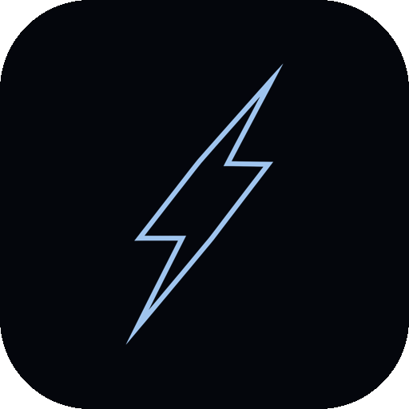

How the Thunderstruck Pictures identity holds up across web, signage, social, and the front of every reel — which version of the bolt to use where, the colors and type around it, and the handful of rules that keep it looking deliberate.
Every lockup below is the same bolt and the same wordmark — only the color changes. Pick by background and size; never restyle on the fly. The bolt always sits behind the wordmark, centered.

Clearspace = X, the cap-height of the wordmark. Keep that margin clear on all four sides — no text, photo edges, page borders, or other logos inside it. The bolt's glow doesn't count as clearspace.
Below the lockup minimum the wordmark stops reading — switch to the bolt mark alone rather than scaling the lockup smaller. That's exactly the rule the website follows: full lockup in the nav, bolt mark as the favicon.
Near-black navy carries almost every surface; ice-blue is the electric accent — the bolt, links, focus states, key moments. Gold appears in one place only (the gear-list / booking affordance) and never touches the logo.
#04060C · background, primary#9FC4EE · accent · the bolt#EEF4FB · text on dark#F4C24A · gear-list only#0E1828 · raised panels#9FB0C6 · secondary text#E7ECF3 · light surfaces#647588 · captions, metaExtra-bold italic is the wordmark and the voice of every headline — uppercase, tight, fast. Use 700–800 weights for display only; don't set paragraphs in it. Free via Google Fonts; fallback: system condensed sans.
Inter carries all running text, buttons, and labels — 400/500 for body, 600 for emphasis. JetBrains Mono handles small uppercase eyebrows and spec lines (like this kit's labels). Both free via Google Fonts.
Saira Condensed · ABCDEFGHIJKLM · 0123456789
A low-opacity field of the bolt mark. It turns empty surfaces — card fronts, slide backgrounds, folder interiors, the footer of a page — into branded space without shouting. Two approved colorways, kept faint.
Rules: the pattern never sits behind body text, never appears in both colorways on one piece, and the bolt inside it is never the "official" logo placement — a real lockup must appear elsewhere on the piece.
Front: the white lockup centered on the ice-on-navy pattern. Back: white stock, navy contact details, the bolt mark, finished with an ice-blue edge line. Shown for Martin — same template for the whole crew.
Print spec: 3.5 × 2 in, navy as a solid spot color (not four-color black), pattern printed tone-on-tone. The ice-blue edge line is a spot-gloss or chrome/silver-foil opportunity — fitting for lightning — if budget allows. Uncoated or soft-touch stock suits the brand better than gloss.
Two approved layouts. A: navy lockup header with an ice-on-navy pattern footer band. B: a navy-on-light pattern spine down the left edge, plain footer — calmer, good for invoices and contracts. Both keep the body completely clear for content.
The website follows these rules today: the bolt + wordmark in the nav, the animated bolt behind the hero wordmark over the storm video, and the bolt tile as the favicon. Every new touchpoint — email signature, reel intro, rate card, yard signage — pulls from this same kit. No new variants.